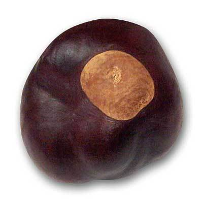

Buckeyes
Description
Buckeyes are peant butter balls covered in chocolate. They are named
"Buckeyes" because they look like the Buckeye Nut commonly found in Ohio.
This is also the name of Ohio State's Football team.
This is salty and sweet treat that is popular year around. However, it is
a common Christmas item in the midwest.

Buckeye Nut
Ingredients
- 2 1/2 cups sugar
- 1 cup peanut butter
- 6 tablespoons unsalted butter melted
- 1/2 teaspoons vanilla
- 1/4 teaspoons salt
- 8 ounces semisweet or bittersweet chocolate chopped
- 1 teaspoon vegetable shortening
Steps
- Line a baking sweet with parchment
- Mix sugar, peanut butter, butter, vanilla, and salt with an electric mixer
until well combined
- Scoop into palm sized balls. Roll between palms to smooth and place on baking sheet
- Put a toothpick in each and place in refrigerator for minimum of 30 minutes, several hours is better, to harden
- Carefully melt chocolate until smooth. If using a microwave go slow, 30s at a time, and stir often
- Dip peanut butter balls in chocolate and return to baking sheet
- Chill until hardened, but I think next day buckeyes are the best
Home